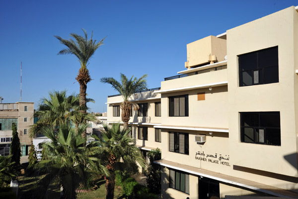
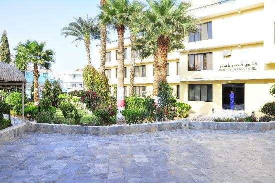

Port Sudan Main Hospital
hospital information
Welcome to Our city Port Sudan DABAIWA
Port Sudan is known among tourists for its excellent scuba-diving and beaches. And in the past few years the city became a tourist attraction for the local community as well
to know where to go in the city you can use our App to make it eazy for you
just chouse where you want to go and you will see some data about the place and contact information and you can also see it on the city map
HOPE YOU INJOY YOUR VISIT TO PORT SUDAN
دبايوا
أهلا بكم في بورتسودان
تعتبر مدينة بورتسودان الميناء البحري الرئيسي بالسودان وهي مدينة ساحلية جميلة تقع في ولاية البحر الاحمر بشمال شرق البلاد وهي عاصمتها ، ولاية البحر الاحمر من أهم ولايات السودان لما لها طبيعة جغرافية متميزة و ساحل بطول 700 كيلومتر
الان ولمعرفة الاماكن التي قد تودون زيارتها بالمدينة يمكنكم ذلك عن طريق هذا التطبيق الذي يريكم اهم معالم المدينة وطريقة الوصول اليها
نرجو ان تستمتعوا بزبارتكم للمدينة
Port Sudan is known among tourists for its excellent scuba-diving and beaches.
There is no better way to experience the historic city of Port Sudan than through the 5-Star hospitality of Coral Port Sudan Hotel.
The hotel is a landmark of the city and the starting point for exploring the beautiful surroundings, and is ideally located at the entrance of Port Sudan harbour with panoramic views of the Red Sea and the city.
The hotel offers its guests all world-class leisure and business facilities and services.
Free Internetتشتهر بور سودان بمواقعها السياحية وخاصة مواقع الغطس وشواطئها الممتازة.
ولا توجد طريقة أفضل لاستكشاف مدينة بور سودان التاريخية إلا عبر فندق كورال بور سودان ذو الخمس نجوم.
حيث يعتبر الفندق أحد معالم المدينة الرئيسية ويعد نقطة الانطلاق لاستكشاف الجمال الذي يحيط بالمدينة، ويتميز الفندق بموقعه المثالي عند مدخل ميناء بور سودان كما يتمتع بإطلالة بانورامية على البحر الأحمر وعلى المدينة.
يقدم فندق كورال بور سودان 114 غرفةً تتضمن 84 غرفة عادية و16 غرفة ديلوكس و11 جناحاً صغيراً وجناحين تنفيذيين وجناح رئاسي.
تتميز جميع غرف الفندق بتوزيعها الداخلي الجميل وتوفر العديد من المزايا والخدمات التي يتميز بها فندق كورال إلى جانب وجود أحدث التجهيزات والمرافق التي تلبي كافة احتياجات الضيوف.
يقدم الفندق لضيوفه مرافق وخدمات ترفيهية وأخرى خاصة برجال الأعمال ذات مستوى عالمي.
إنترنت مجاني
خدمة تنظيف الغرفة على مدار 24 ساعة
خدمات تنظيف الملابس
خدمات رعاية الأطفال (عبر حجز مسبق)
مركز أعمال
كرسي متحرك
ناد صحي وبركة سباحة
رحلات من وإلى المطار
يقدم خبراء الطهي المبدعون لدى الفندق مجموعة مميزة من النكهات من مختلف أنحاء العالم. فإلى جانب المأكولات العالمية، يمكن للضيوف الكرام الاستمتاع بالمأكولات المحلية الأصيلة المعدة من أفضل المكونات المحلية الطازجة.


a 4 stars hotel in port Sudan,One of the most presteguse hotels in Potr Sudan, In the city center, with some very good services
بعتبر فندق بورتسودان بعشر بالاس أحد أكثر الفنادق عراقة في المدينة. يتمتع بموقع قريب من مركز المدينة. ويتميز ايضا بخدماته الممتازة
 a 4 stars hotel in port Sudan
يقع فندق البصيري - ببورتسودان -شارع جامعة البحرالاحمر ، و يقدم الفندق ارقي الخدمات الفندقيه علي مستوي مرموق للشركات والمؤسسات والمنظمات والبنوك والافراد ومختلف القطاعات. ويحتوي على
سـتون غرفة مجـهزة باحدث الاثاثات .سخان ماء وثلاجة مني بار.
اجنحة اعدت خصيصا لرجال الأعمال .
غرف عائلية تتسع لاربعة وخمس اشخاص .
خدمات الغرف 24 ساعة
حديقة ملحق بها كافتريا تقدم وجبات سريعة ومشروبات
قاعة اجتماعات: مزودةباحدث الاجهزة لاقامة ورش العمل والمعارض والسمنارات والمؤتمرات
You Can Consider Dream as the most modern fast food and restaurant in the City with a lot of choices from pies to sandwiches to Ice creams it is one of the best restaurants in the city
يعتبر مطعم دريم احد اكثر المطاعم او كافتيريات الوجبات السريعة حداثة وشهرة بمدينة بورتسودان، مع قائمة طعام متنوعة بين الساندويتشات والفطائر والايس كريم، يعتبر احد افضل الاماكن للأكل فيها
Burger بيرقر
Pitza بيتزا
Sheesh شبش كباب
pies فطائر
Shawirma شاورما
Ice Cream ايسكريم
guises عصائر
Call phone هاتف
best food
Almuhagir is one of the best fast food and restaurants of the City with lots of choices from pies to sandwiches it is one of the best restaurants in the city
مطعم وكافتيريا المهاجر أحد أكثر الأماكن التي يمكن ان تستمتع بتناول الطعام فيها لما يحتويه من قائمة مميزة وموقع جيد
Burger بيرقر
Pitza بيتزا
Sheesh شبش كباب
pies فطائر
Shawirma شاورما
guises عصائر
The SRSR is built on top of a hard coral rock plateau facing the sea, with its back to a long range of Red Sea mountains. The area is a habitat to a number of sea birds and Eagles such as the Capasian stern, Flamingos and Saunder stern. Camels come to graze or quench their thirst around the shore near the resort. Beja camel herders roam in the nearby open plains. The SRSR is a showcase of the start of eco tourism in Sudan, beautiful landscaping and Sudanese art and artisans incorporated in its walls and grounds. It’s a dream come true.
The bungalows are located on the western wing of the SRSR.,facing North-West catching the North-Eastern breeze and a beautiful Red Sea Mountains sun set. The wooden bungalows are comfortably made and each bungalow has a private porch.. Its minimalist interior design incorporates natural materials and locally designed furniture, and is aesthetically appealing. The bungalow is furnished with 2 single beds, 2 chairs, a table and a cupboard.
The new addition to the SRSR is the en-suite facing East with a complete view of the Red Sea. Comprised of a porch, small lounge, bathroom, and bedroom with double bed, and artistically decorated interior embedding the colourful culture of the Red Sea Beja tribes.
The SRSR has its own diving center.
The diving center offers
• DivingThe diving equipment is Mares 2005 and later editions included. Available are 90 bottles, bauer compressor, suites, regulators, fins and masks.
The dives take place with a 14m boat with 2x200 Yamaha HP motor engines. It has a shade and it is spacious. A diving master or instructor accompanies you in your diving adventures. A minimum of 40 prior dives is essential for safety with our diving team. If the instructor is available, a discover-diving dive can be arranged in the shallow reefs around the SRSR. The diving is available from one person to a group of 10 . Starting as early as you can in the morning and returning before sun set. The first dive takes place in the nearest small reef near the SRSR (such as Abu Adila) followed by a programme incorporating your wishes.
The diving programme includes the smaller reefs (AbuAdila , 3reees) and the famous lagoon Shub Rumi and Sanganeb, and the wrecks of the Blue Bell and Umbria. Shub Rumi is the nearest lagoon to the lodge so it’s possible to dive there often.
The diving center is expanding its premises and will include diving courses in the future.
You will be travelling to the Republic of Sudan in North-East Africa.Sudan is a separate country from the new South Sudan.Sudan is a country of diverse tribes with different local languages, sharing Arabic as the official language. It’s a moslim country.North Sudan is a country of different topographic nature.To the North is its fertile rich Nile and archeological sites;To the East its virgin Red Sea and massive coral reefs, the great Red Sea mountainous and plenty of mineral wealth;To the West lush cattle grazing herds plains.
The capital of the Red Sea State. It holds Sudan’s port to the red sea.It’s a well established town with good infrastructure, services, hotels and pleasant environment.It has an international airport.
International flights come to Port Sudan on Saturday from Cairo – Sudan AirwaysEvery day busses leave from Khartoum to Port Sudan and vice versa around 6 am.
Port Sudan is 600 kms from Khartoum, on a well-paved road .Travel within Sudan can be arranged by the SRSR.
The lodge van transports guests to and from the airport or bus terminal in Port Sudan
أول منتجع يقع على فكرة السياحة البيئية على البحر الاحمر وفكرة السياحة البيئية بالسودان
يقع المنتجع في الكيلو 27 على الطريق الساحلي بورتسودان - مصر
10 غرف لإقامة 23 شخص
مع مجمع خارجي للحمامات
10 شاليهات لإقامة 20 شخص
يتميز بأجمل موقع مطعم بمدينة بورتسودان بواجهته المطلة على البحر الاحمر ومطعم داخلي وخارجي على التيراس والحديقة، يقدم المطعم الوجبات المختلفة والمآدب وخدمات ورش العمل والمناسبات الرسمية والاسرية
يوجد مركز غطس بالمنتجع مؤسس بكل معدات الغطس، قارب مركز الغطس بمحركين وطوله 14 متر يقوم برحلات الغطس والسنوركلينج. مركز الغطس يقوم برحلاته الى اماكن الغطس المشهورة بالحر الاحمر السوداني مثل لاقونة شعب رومي وسنقنيب وحطام الامبيريا بالاضافة الى الشعب الصغيرة حول المنتجع
هذه المنطقة مخصصة للرحلات اليومية مع رسوم الدخول ويمكن التخييم بالمنطقة عند الطلب ولإقامة الناسبات المتوسعة لعدة افراد
ويوجد مطعم سوداني لتقديم المأكولات الاتقليدية السودانية ولبمشروبات الباردة والساخنة والجبنة الشرقية المتميزة


Sudan Line was Opened in 2010 and contain 34 rooms
Emergency room
ICU
Lab
2 operation rooms
Pharmacy
تم افتتاح مستشفى سودان لاين عام 2010 ويحتوي على عدد 34 غرفة لإستقبال المرضى كما يحوي على
غرفة طوارئ
معمل
غرفة عناية مركزة
غرفتي عمليات
حاضنة
صيدلية